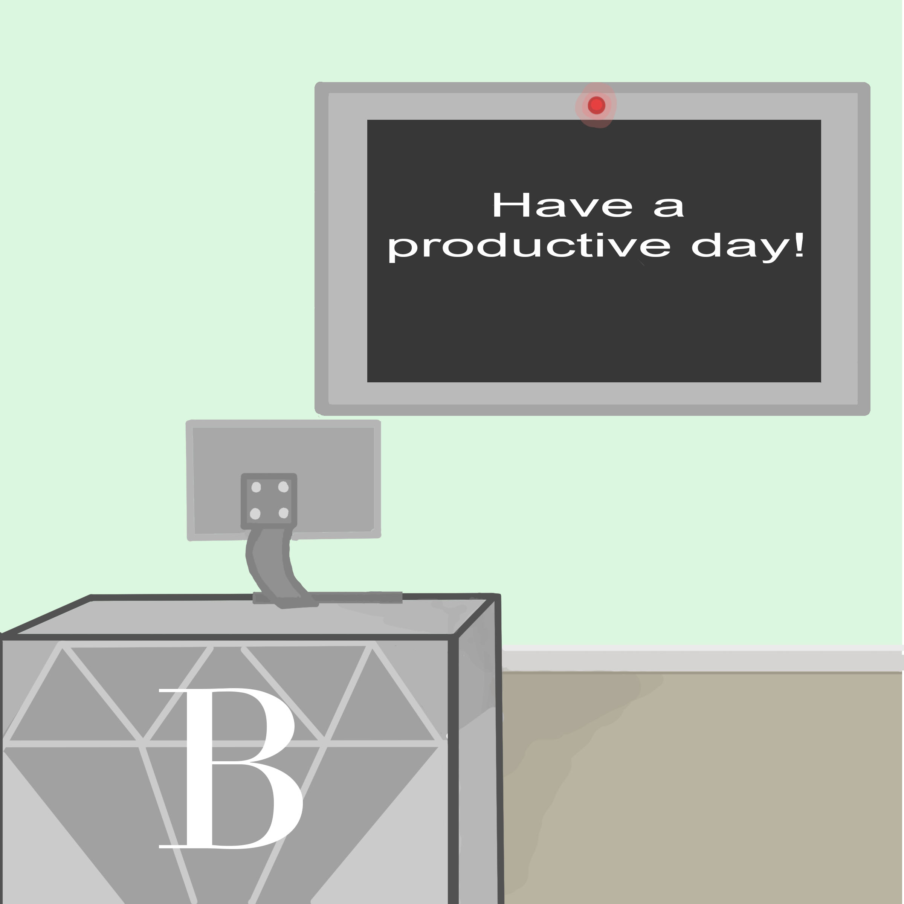

Coding
by Kelli Boling
 Designed by Kelli Boling
Intro into Coding
Coding is taking an algorithm and transitioning it into a coding language so that the computer can execute it. The coding languages are used as building blocks for tools and programs. The first coding language was written over 100 years go and it was written by a woman named Ada Lovelace. It is used today by millions of programmers and software developers. There are many different languages to use while you code, each with different benefits.
Who Uses Coding languages?
Some examples of companies that use coding languages are NASA, Facebook, Google, Yahoo, ans Spotify. It’s also used by banks, subways, and any web applications.
What Languages are Used and What do they do?
- Easy to learn, everyone uses it; Pinterest & Instagram, and math scripts.
- C- In between language, can run anywhere, easier to learn,It was also low level enough to be close to hardware, but no so low level that you had to do everything manually
- Ruby-Major- Supplier of web apps easy to use.
- JavaScript- Basically everywhere, allows designers to add interactive elements.
- C#- Develops Microsoft apps nearly identical to Java.
- PHP- Data heavy websites, ton of power).
- Objective-C- Used by ios apps, apple.
- SQL- Big data, isn’t used alone, help you interact with sweet data
Someone who is in need of a coding language should look at all of the options before choosing their language.
Resources
- USF Health "Coding 101-The Evolution of Programming and Its Possible Future"
- Inc. "10 Most Popular Programming Languages Today"
- Learneroo "The Different Programming Languages"
- Veracode "The History of Programming Languages Infographic"